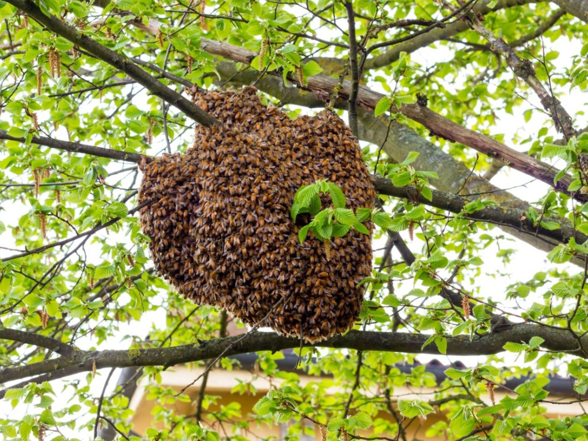
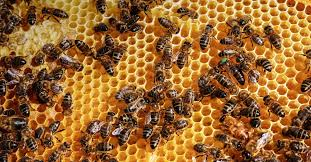
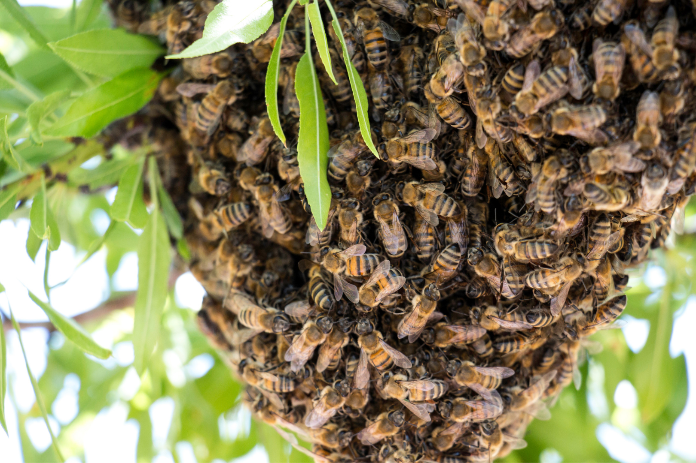

"The hum of bees is the voice of the garden."
— Elizabeth Lawrence
01 — SOCIAL STRUCTURE
Colony & Hive



A honey bee colony is a highly organized social unit consisting of one queen, thousands of female worker bees, and several hundred male drones, totaling up to 80,000 individuals. They live together in a hive — a natural cavity or man-made box — where they raise brood and store food in beeswax combs.
The colony is often called a "superorganism," where individual bees cannot survive alone. The Queen (one per colony) is the only fertile female, responsible for laying up to 2,000 eggs per day. Worker Bees (thousands) are sterile females performing all labor: cleaning, feeding larvae, producing wax, guarding, and foraging. Drones (hundreds) are male bees whose sole purpose is to mate with a new queen. They die after mating.
A hive is the physical structure where the colony resides. Modern hives contain removable frames, while older types or wild nests are fixed-frame. Inside, honeycomb — beeswax structures with hexagonal cells — store honey, pollen, and developing brood. The colony maintains a consistent internal climate, cooling the nest in hot weather through water collection and active ventilation. Bees communicate via pheromones and dances to locate food and maintain social order.
02 — BIOLOGY
Life Cycle
A colony contains one queen, seasonal drone bees (males), and tens of thousands of female worker bees. Eggs are laid in wax honeycomb cells. Drones develop from unfertilised eggs (haploid); females from fertilised eggs (diploid). Larvae are fed royal jelly, then honey and pollen — except one larva fed solely on royal jelly, which becomes the next queen.
Young workers ("nurse bees") clean the hive and feed larvae. As they age, they shift to building comb, receiving nectar, guarding, and eventually foraging outside. Workers communicate food source locations through a "waggle dance" — a figure-eight pattern whose angle and duration encode direction and distance to the food. Resources very close to the hive trigger a simpler "round dance."
Virgin queens fly out to mate with multiple drones from other colonies. New colonies form not through a lone queen but via swarms: a mated queen plus a large group of workers move to a pre-scouted nest site, build new comb, and raise a fresh brood. This swarming behavior is the primary means of colony reproduction and can travel surprisingly long distances before settling.
03 — ECOLOGY
Habitats
Honey bees are remarkably adaptable insects found across nearly every continent except Antarctica. In the wild, they seek out sheltered, enclosed spaces that offer protection from weather and predators. Common nesting sites include hollow tree trunks, rock crevices, cliff faces, and underground cavities. Some species prefer building exposed open-air combs on large tree branches or cliff overhangs.
Honey bees are native to Europe, Africa, and Asia, but have been introduced to the Americas and Australia through human activity. They thrive in tropical and subtropical forests, temperate woodlands and meadows, arid scrublands, and even mountainous regions at high altitude. A suitable habitat offers abundant flowering plants for nectar and pollen, a reliable water source, shelter from wind and rain, and open foraging land within a 2 to 3 km radius of the hive.
Honey bee habitats are increasingly under pressure from deforestation, urbanisation, pesticide use, and climate change. These factors reduce nesting sites, limit food availability, and disrupt the seasonal flowering patterns bees depend on. Protecting green spaces and planting wildflowers are among the simplest and most effective ways to support healthy bee populations.